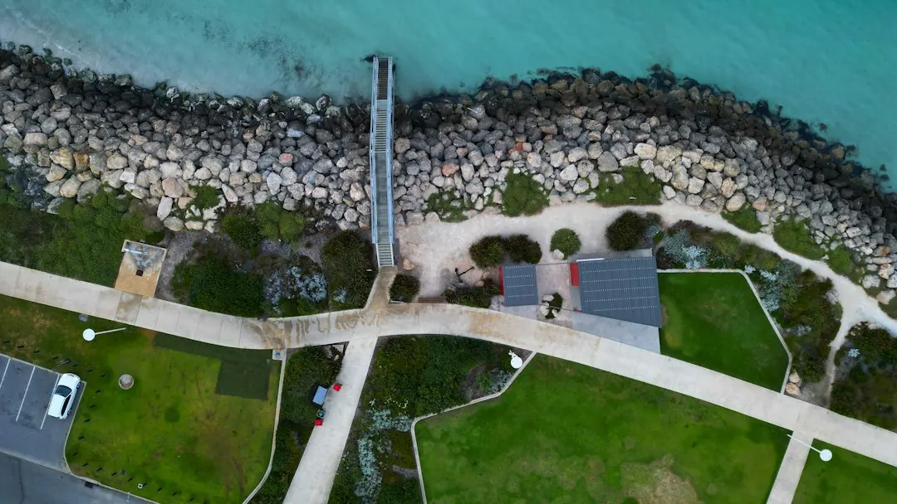

Landscaping costs in Perth depend mainly on access, soil preparation, levels, materials and the amount of hardscape involved. Perth sand may need conditioning before planting or turf, while paving needs a firm, well-drained base and sloping sites may require retaining. Decide the job type, inspect water supply and site access, then compare quotes line by line so each proposal includes the same preparation, construction and finishing work.
For homeowners comparing landscaping costs perth options, the practical decision is how soil, water, access, levels and the chosen mix of planting and construction will shape the job.
Landscaping Costs Perth Explained
The published guidance from Landscapers Perth treats the ground beneath the garden as the starting point for a realistic quote. Before contacting a contractor, decide whether the project is a full garden makeover, new turf, artificial grass, paving, a retaining wall or reticulation. The choice changes the preparation, materials and order of work.
Write down the rough area, suburb, access conditions and any existing features that must stay. Photos or plans can help explain the site, particularly where machinery access, established trees, shade or a slope may affect the design. A short brief also makes it easier to compare proposals that are describing the same job.
- Record the approximate size and shape of each work area.
- Note vehicle or machinery access, narrow side paths and changes in level.
- Identify existing trees, shaded areas and surfaces that may remain.
- State whether irrigation will use bore or scheme water.
Why Perth sand changes preparation
Much of metropolitan Perth sits on fast-draining sand that holds little water or nutrient. Dry sand can also repel water, so beds and turf areas may need soil conditioner or organic matter before planting. Ask for the proposed preparation method and whether it applies consistently across the areas being quoted.
The same site condition affects hard surfaces. Paving requires a firm, well-compacted base, while turf needs prepared sand and grass selected for the available sun, shade and watering pattern. A cheaper surface proposal may not be comparable if one quote includes preparation and another leaves it unclear.
Material choices should follow the site rather than a catalogue preference. Full garden landscaping may combine beds, turf, plants, mulch and edging. A narrower project may suit only lawn installation, planting or surface work. The useful question is which parts are necessary for the intended use of the garden and which are optional finishes.
Match water design to lawn and beds
Reticulation is more than laying pipe. The guide describes zones, a controller and planning for scheme or bore water, with lawns and garden beds treated separately. Rain sensors and the number of zones can affect the design, so ask which areas each zone serves and where controls will be positioned.
Pipework is best planned before turf, paving and mulch are installed. If irrigation is added later, finished surfaces may need to be disturbed or the layout may be constrained by what is already built. Include the water source, controller, sensors and zones in the written scope rather than assuming they are included in a general landscaping allowance.
For a maintenance-focused project, clarify whether the quotation is for construction or ongoing visits. Construction work is generally quoted as a whole job, while hourly arrangements suit garden maintenance and small tidy-ups. The guide also notes that spring growth and summer reticulation checks can change maintenance needs, so ask how visit length and frequency are handled.
Retaining, paving and approvals need separate checks
Sloping or boundary sites can require limestone or block retaining to create a level garden area. A retaining wall near a shared boundary raises questions beyond materials, including council permits, engineering and communication with neighbours. Check the relevant local council requirements before treating the wall as an ordinary landscaping item.
Paving has its own decision path. Paths, patios and pool surrounds need a well-drained, compacted base, and the finished level must work with adjoining doors, lawns and drainage. Ask what excavation, base preparation, edging and clean-up are included. A quote that names only the paving material does not explain the complete installation.
Local conditions can change the brief without determining a universal price. Coastal locations such as Cottesloe and Scarborough may involve salt wind, Kalamunda sites may bring hills and slopes, and newer estates in Baldivis or Ellenbrook may begin with bare builder's sand. Use the actual block conditions to shape the questions.
Compare quotes by scope, not headline price
Two landscaping quotes are useful only when their inclusions can be compared. Put each proposal beside the same checklist and mark whether it includes preparation, disposal, materials, irrigation, drainage, retaining, planting, turf, paving and final clean-up. Ask for unclear items to be described rather than relying on a broad label such as full makeover.
- Confirm the intended result and the approximate areas involved.
- Check how sand, levels, access and existing surfaces are treated.
- Separate optional upgrades from work needed for the design to function.
- Ask which licences and insurance apply to the particular work.
- Review the sequence from design and site preparation through installation and finishing.
Where a project combines trades, confirm who handles each part. Reticulation from a bore and retaining near a boundary may involve different technical questions. Current certificates and public liability cover should be checked for the work being considered, rather than assumed from a general description.
- Define the project. Choose the main work type and note the rough size, suburb, access and existing features.
- Inspect the site. Check slope, shade, trees, water source and the route available for equipment.
- Clarify approvals. Ask the local council about permits or engineering where retaining or boundaries are involved.
- Compare written scopes. Check that preparation, materials, irrigation, construction and clean-up are treated consistently.
| Choice | Best question to ask | Main quote detail |
|---|---|---|
| New turf | How will Perth sand be prepared and how will sun, shade and watering be handled? | Soil improvement, turf selection and irrigation timing |
| Paving or hardscape | What base, levels and drainage work are included? | Excavation, compaction, edging and finished surface |
| Retaining wall | Does the location require council or engineering checks? | Limestone or block construction, boundary issues and approvals |
| Reticulation | Is the system designed for bore or scheme water? | Zones, controller, sensors and installation sequence |
Common questions
Why can two landscaping quotes for Perth differ so much? Access, soil preparation, levels, materials and the amount of hardscape can all change the work behind the headline price. Sand preparation, paving bases and retaining are especially important comparison points.
Should reticulation be planned before turf and paving? Yes. The guide recommends laying reticulation pipes before turf, paving and mulch, with separate zones considered for lawns and garden beds.
What should be checked before building a retaining wall? Ask the local council about permits and engineering, and speak with neighbours early if the wall is near a shared boundary.
Is every landscaping job quoted in the same way? Construction work is generally quoted as a whole job, while hourly arrangements suit maintenance and small tidy-ups. Ask which format applies and what the visit or installation includes.
This guide covers Perth landscaping cost factors, site preparation, water planning, retaining, paving, quote comparison and practical project questions.